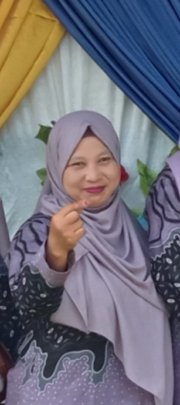
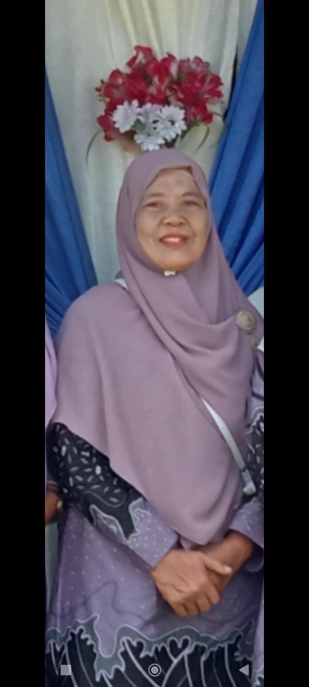
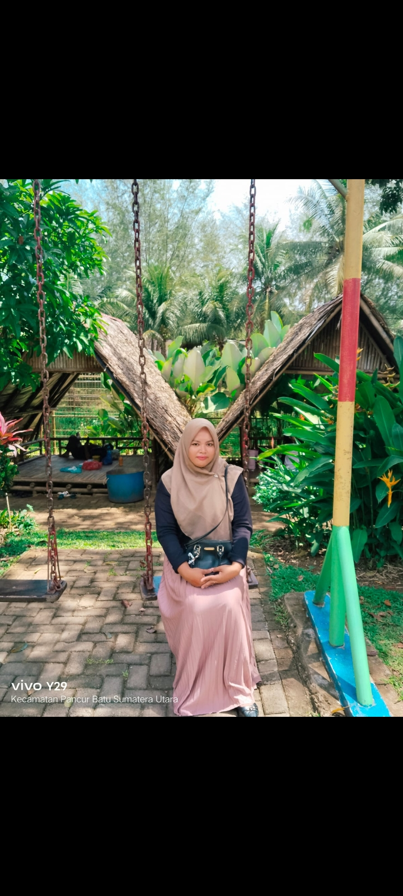
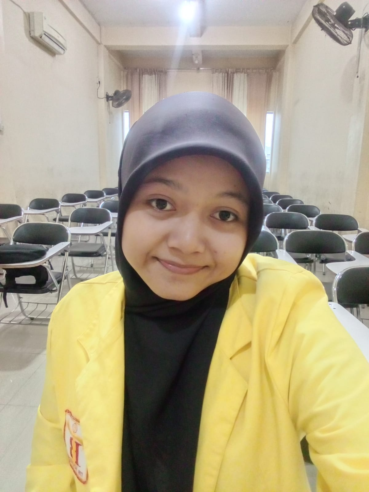
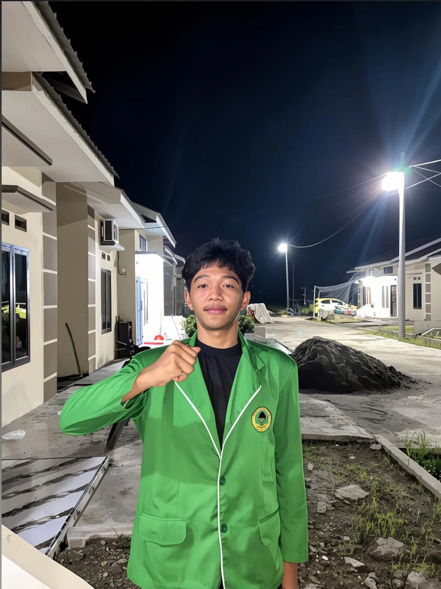

👩🏫Data Guru
Data Guru MTs Swasta Al-Jamilah
☘

Hamlis Handayani S.Ag
Kepala Sekolah, Guru Bahasa Arab, Al-Qur'an Hadits
Edy Kurniawan S.Pd
Operator Sekolah
Syafrizal S.Pd
Operator, Guru Matematika

Sri Minarni S.Pd
Guru Bahasa Inggris

Dra. Dewi Ratna Miswati S.Pd
Guru Bahasa Indonesia
Azhar S.Pdi
Guru Aqidah Akhlak
Surahman S.Pdi
Guru Seni Kebudayaan Islam

Farida Hanum
Guru IPS & PPKN
Dera Yustika S.Si
Guru TIK & IPA
Selly Syafitri S.Sos
Guru Fiqih

Kesya Soraya
Guru Seni Budaya & Keterampilan

Taufiq Qurrahman Nst
Guru Penjas & Mulok